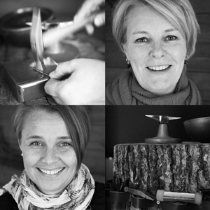
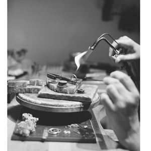

Om oss
Vi på VALDI smycken i Kalmar är båda utbildade guldsmeder, och har lång erfarenhet av formgivning, tillverkning
och försäljning av smycken. Smyckena vi säljer i vår butik tillverkar vi på plats i verkstaden, med kärlek och största omsorg.
Varje smycke blir därför unikt, och har en egen personlighet.
Vi har valt att tillverka våra smycken i de traditionella ädelmetallerna 18 K guld och 925 silver.
Vårt formspråk är stilrent och enkelt, tanken är att du ska kunna bära och glädjas åt ditt smycke från Valdi under många år.
Vi är även återförsäljare och har ett noga utvalt sortiment från andra smyckestillverkare tex Guldbolaget, Sophie by Sophie, CU jewellery och Sägen.
I vår verkstad skapar vi skräddarsydda smycken efter våra kunders önskemål.
Vi utför också reparationer av smycken, pärlomträdningar, storleksändringar av ringar...
Har du "gammalt" guld som ligger hemma i lådorna? Sälj gärna det till oss. För pengarna du får kan du antingen handla i vår butik, eller varför inte låta tillverka ett unikt smycke i vår verkstad?
Verkstaden
Verkstaden är hjärtat i vår verksamhet!
Det är här våra smycken blir till. Det börjar oftast med en skiss, idé eller en tanke. Därefter sågar, valsar och smider vi de ädla metallerna silver och guld till vackra smycken. Ibland fattar vi in ädelstenar. Våra kunder är ofta delaktiga under processen, just för att resultatet ska bli så bra som de har tänkt sig.
Det är ett stort förtroende att få tillverka ett smycke för livet. En vigselring, studentgåva eller kanske ett dopsmycke. Smycken som kommer att bäras varje dag under många år.
I vår verkstad gör vi unika smycken i ett exemplar men vi tillverkar även smycken i flera upplagor. Att arbeta med återvunna metaller är en självklarhet för oss. Därför köper vi gärna in guld av våra kunder. Sälj ditt gamla guld till oss, och för pengarna kan du köpa eller tillverka ett nytt smycke.
Behöver du laga ditt favoritsmycke så kan vi även hjälpa dig med detta.